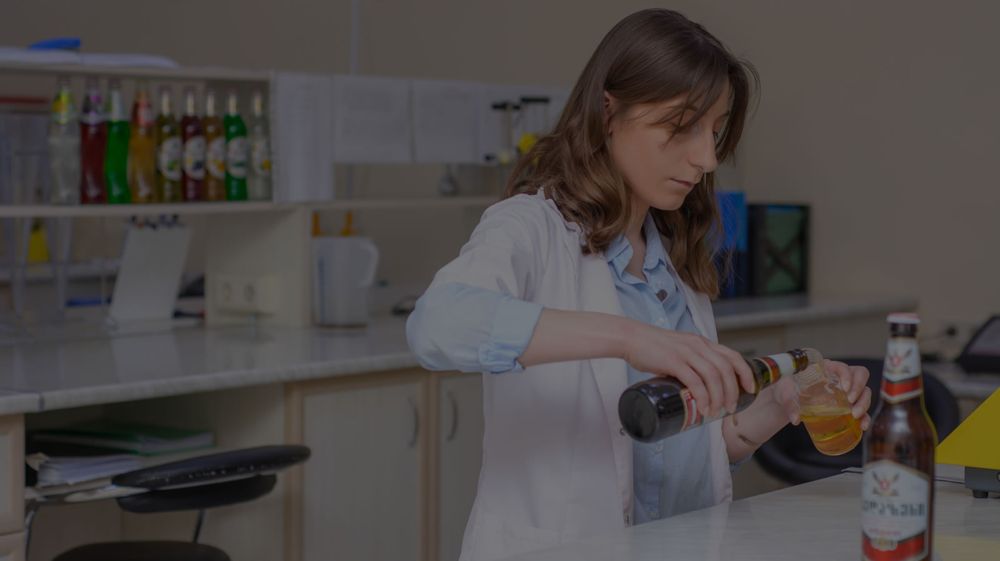

წარმოება
უზარმაზარ ტერიტორიაზე გაშლილ ქარხანაში იწარმოება როგორც ალკოჰოლური, ისე უალკოჰოლო პროდუქცია. ნედლეული და პროდუქტი მთელი ციკლის განმავლობაში მხოლოდ უმაღლესი ხარისხის უჟანგავ ფოლადს ეხება.


საამაყო ხარისხი
ყველა ეტაპზე
პროდუქცია წარმოების ყველა ეტაპზე მოწმდება: ნედლეულის შერჩევიდან და ლაბორატორიული შემოწმებიდან ჩამოსხმამდე, შეფუთვამდე და დასაწყობებამდე.
ჩამოსასხმელი ხაზები
მინისა და PET ბოთლები, ალუმინის ქილები და ლითონის კასრები. გერმანული KHS-ისა და Krones-ის ხაზები, სადაც წარმოების ელექტრონული კონტროლი ადამიანურ შეცდომას გამორიცხავს.
ზედაზენის წყალი
ადგილი გეოლოგიურმა კვლევებმა განსაზღვრა. კომპანია წყალს საკუთარი ჭაბურღილებით, 150 მეტრის სიღრმიდან მოიპოვებს.
ლაბორატორია
ქიმიური და მიკრობიოლოგიური კონტროლი ყველა ეტაპზე: ნედლეულიდან მზა პროდუქტამდე. ყოველი ჩამოსხმის ნიმუში ლაბორატორიაში ინახება.
ლიცენზიარის კონტროლი
ლიცენზირებული პროდუქტის ყოველი პარტიიდან ნიმუში ლიცენზიარის ლაბორატორიაში იგზავნება და სავაჭრო ქსელში მხოლოდ მისი დასტურის შემდეგ გადის.
ასეპტიკური ტექნოლოგია
ხილის ცივი დამუშავება დანამატების გარეშე ინარჩუნებს ვიტამინებს, გემოსა და ფერს. რეგიონში პირველი ასეპტიკური ხაზი.
FSSC სერტიფიკატი
კომპანიაში დანერგილია სურსათის უსაფრთხოების საერთაშორისო სტანდარტები. სერტიფიცირებასა და რეგულარულ მონიტორინგს გერმანული TÜV SÜD ახორციელებს.
ნახეთ საკუთარი თვალით
ეწვიეთ ზედაზენის ქარხანას და ნახეთ, როგორ იხარშება ნამდვილი ქართული ლუდი.